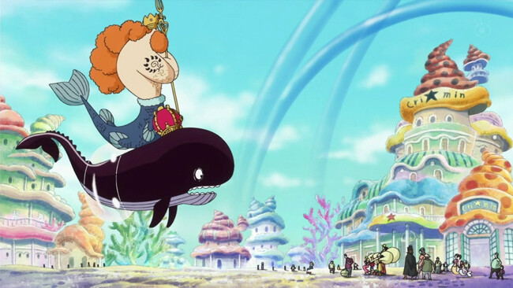

One Piece': Todos los arcos de la Saga del East Blue
Con el número de capítulos puede ser complicado, pero por suerte es muy fácil identificar cada momento de 'One Piece' por su saga
Arco de Romance Dawn: Capítulos 1 a 3
Arco de Orange Town: Capítulos 4 a 8
Arco de Villa Syrup: Capítulos 9 a 18
Arco del Baratie: Capítulos 19 a 30
Arco de Arlong Park: Capítulos 31 a 44
Arco de Loguetown: Capítulo 45, y capítulos 48 a 54
Arco de la Banda de Buggy: Capítulos 46 y 47
Arco del Dragón Milenario: Capítulos 54 a 61

Saga del East Blue
Aquí empieza toda la historia y vemos los inicios de lo que será la tripulación de los Sombrero de Paja, empezando con la primera aventura de Luffy y cuando comienza a formarse el grupo antes de partir al Grand Line.